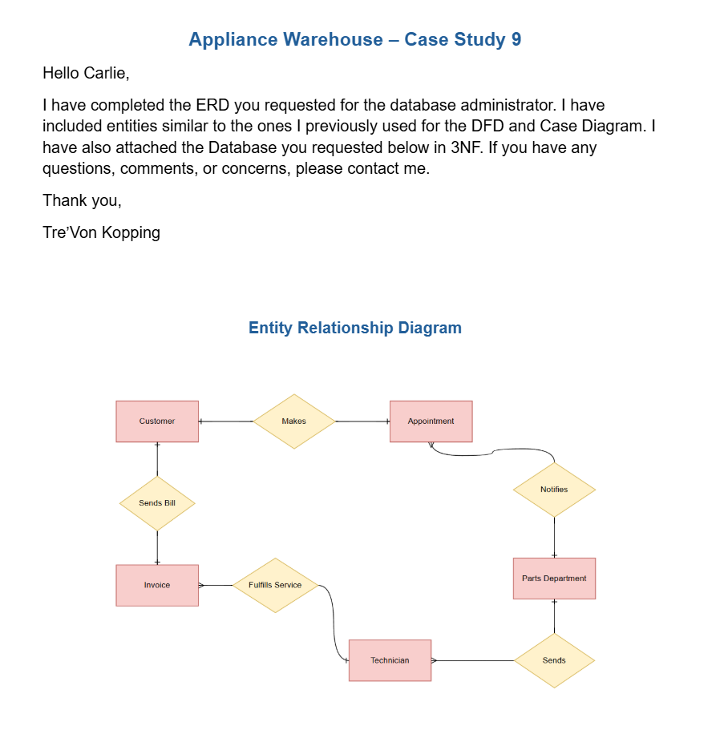
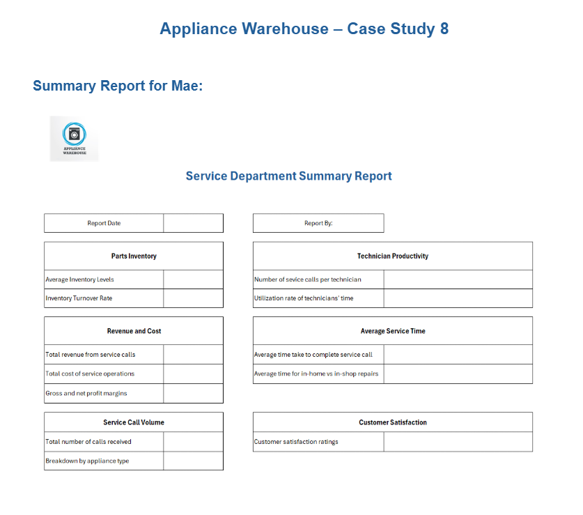
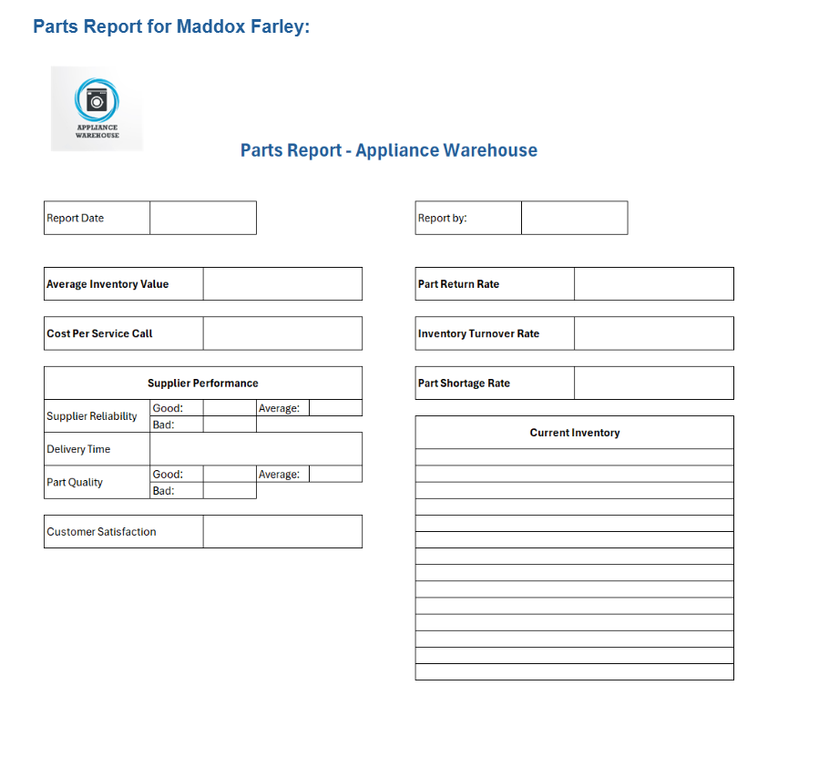
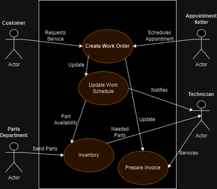
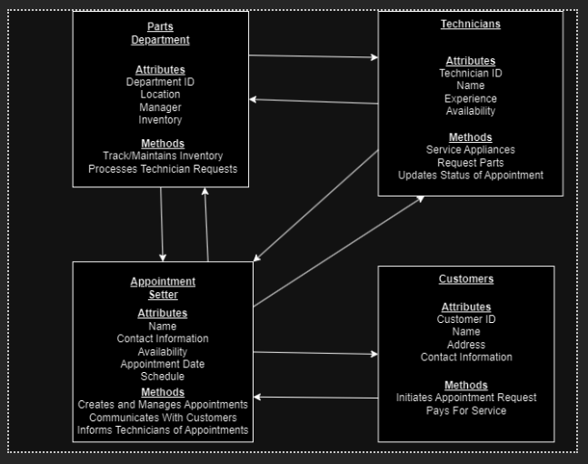

This course details each step in the System Development Life Cycle (SDLC) from the initial planning and SWOT analysis to its final stages. It explores the bridge between business needs and technical solutions. This class has taught me how to evaluate business cases, gather requirements using techniques such as JAD and RAD, and model system logic with Data Flow Diagrams (DFDs) and the Unified Modeling Language (UML).
Exploring the planning, analysis, design, implementation, and support/security phases.
Comparing Agile, Waterfall, and Object-Oriented development paths to determine the best approach for specific business cases.
Navigating "build vs. buy" decisions, managing RFPs, system installations, and identifying when a legacy system has reached its end-of-life.
Developing and understanding entity relationship diagrams through simulation.

Designed summary and part report screen prototypes while evaluating the strategic advantages and disadvantages of prototyping in the design phase.


Created a use case diagram and data model to understand interactions between entities.

